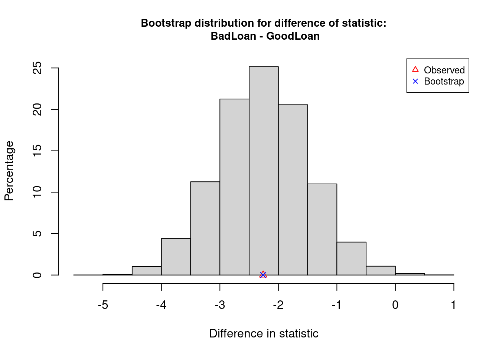

9 (b) Bootstrap CI for a difference in means
The boot(y ~ x, data=) command generates 10000 bootstrap samples for the true difference in means of y for each of the two groups in x. The command is contained in the CarletonStats package. Here we use it to compute the bootstrap distribution for the difference in mean ages of the two default groups:
** Bootstrap interval for difference of statistic
Observed difference of statistic: BadLoan - GoodLoan = -2.26095
Mean of bootstrap distribution: -2.24878
Standard error of bootstrap distribution: 0.7823
Bootstrap percentile interval
2.5% 97.5%
-3.761429 -0.710000
*--------------*
- Give the difference in sample mean ages reported by the output. Use correct notation.
Click for answer
Answer: The average age of people with a bad loan is about 2.3 years less than the average age of people with a good loan.
- Give the 95% confidence interval for the difference in mean ages using the percentile method
Click for answer
Answer: The percentile interval is -3.8 to -0.7 years.
- Compute the 95% confidence interval for the difference in mean ages using the bootstrap SE. Is it similar to the CI from the percentile method?
Click for answer
Answer: The CI using the SE is -3.8 to -0.7. The intervals are very similar.
\[ -2.26095 \pm 2(0.77852) = (-3.81799, -0.70391) \]
-2.26095 - 2*(0.77852)[1] -3.81799
-2.26095 + 2*(0.77852)[1] -0.70391